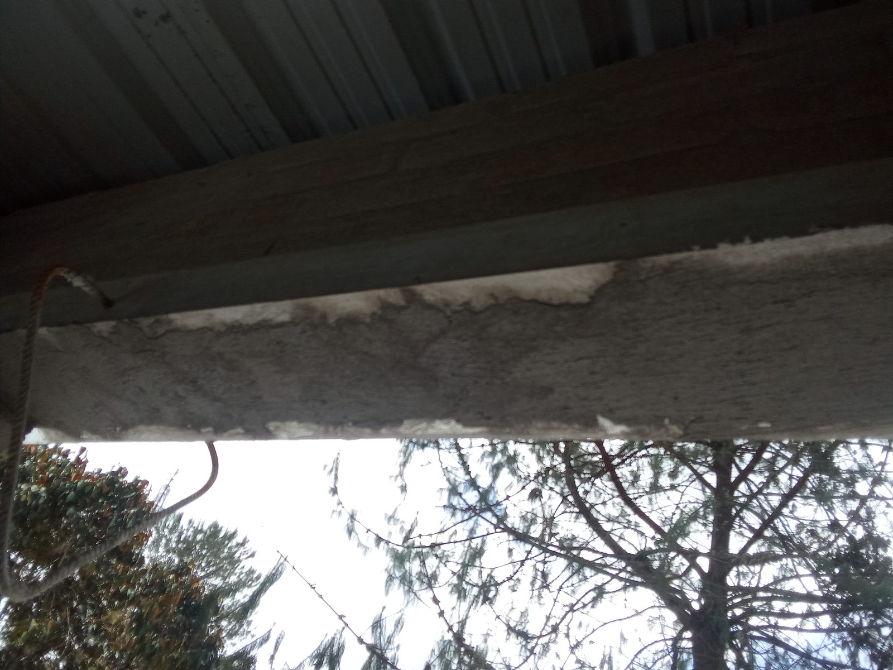

Aplicación WebCalculadora de Concreto & Materiales
Versión Web Interactiva — Dosificación Cemento, Arena y Triturado
Herramienta técnica especializada en el cálculo exacto de cantidades de arena, cemento (kg y bultos), triturado (m³ y viajes), mezclas de mortero, diseño de vías por método tarreo y cuantías de acero para placa huella y pavimento rígido.